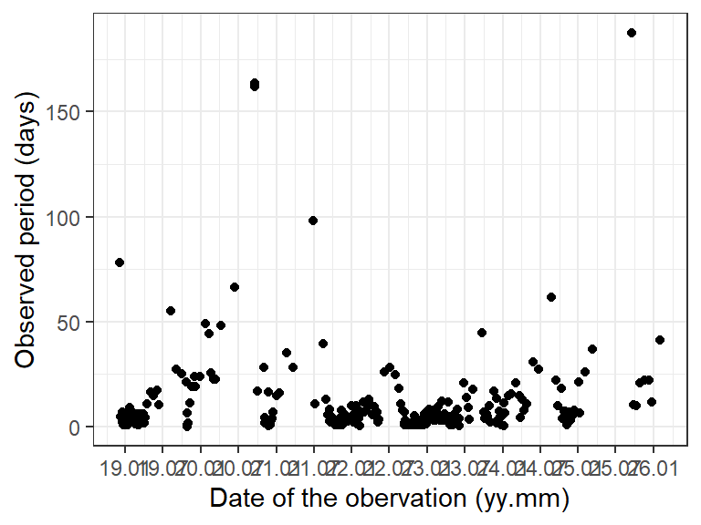
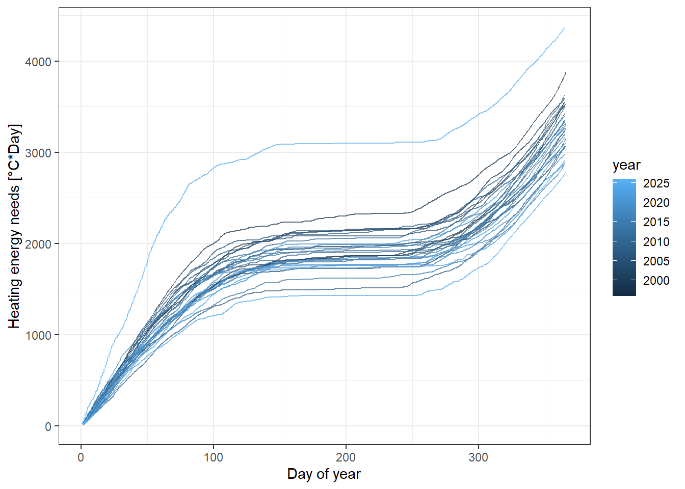
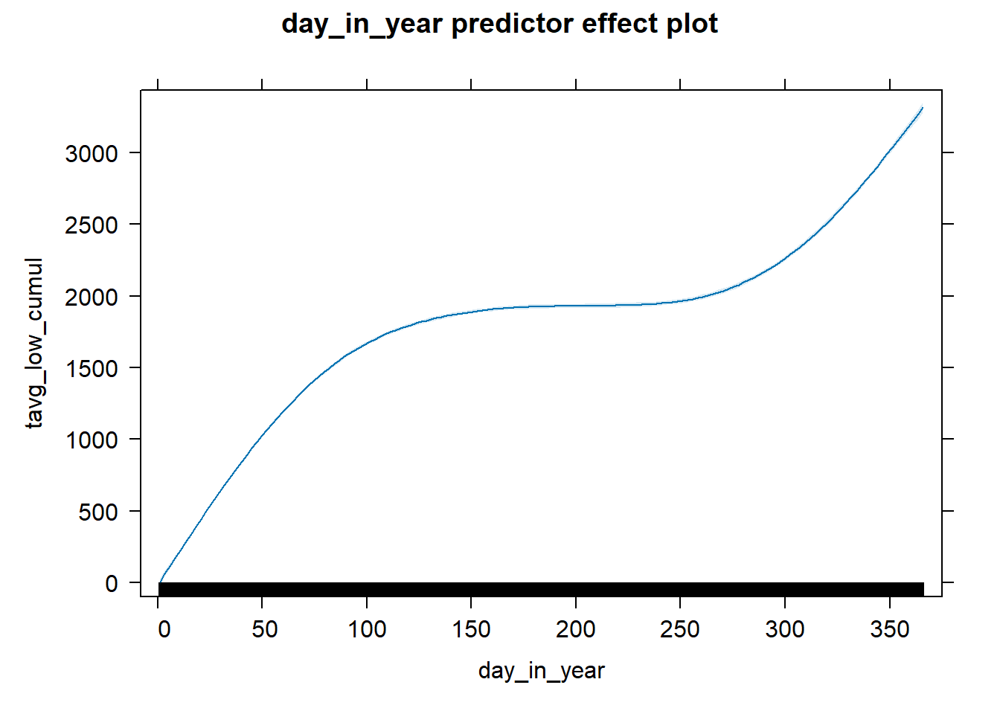
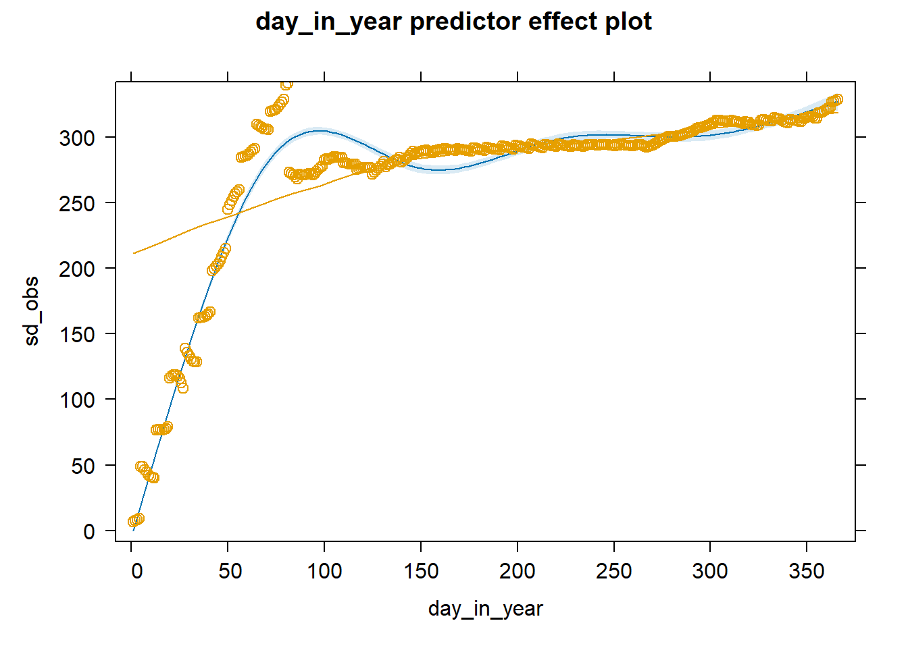
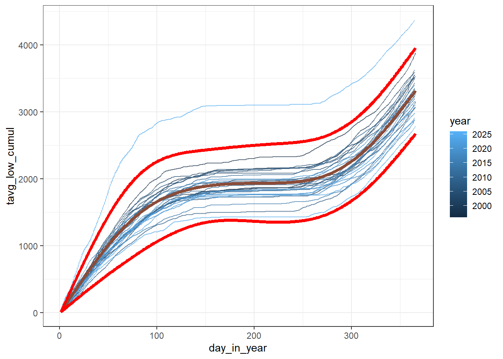
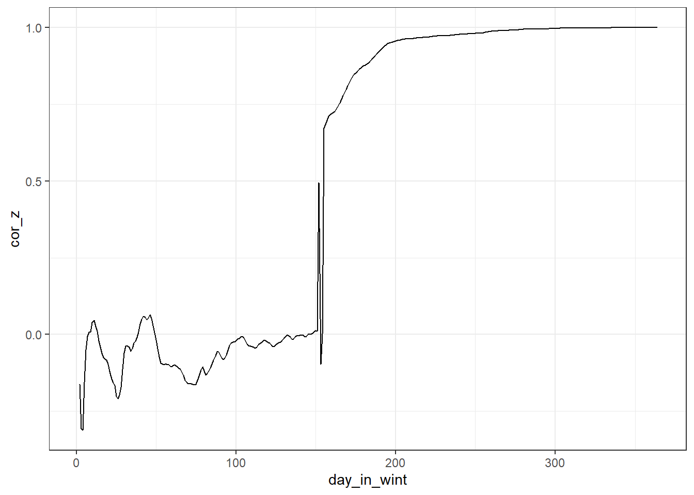
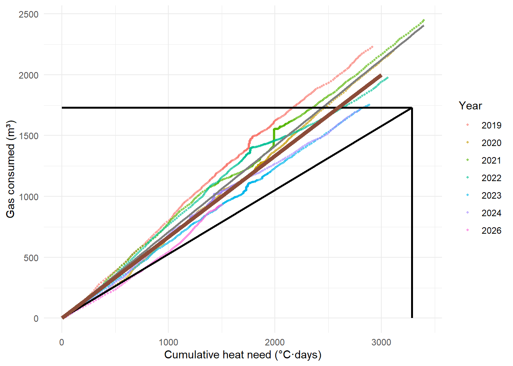
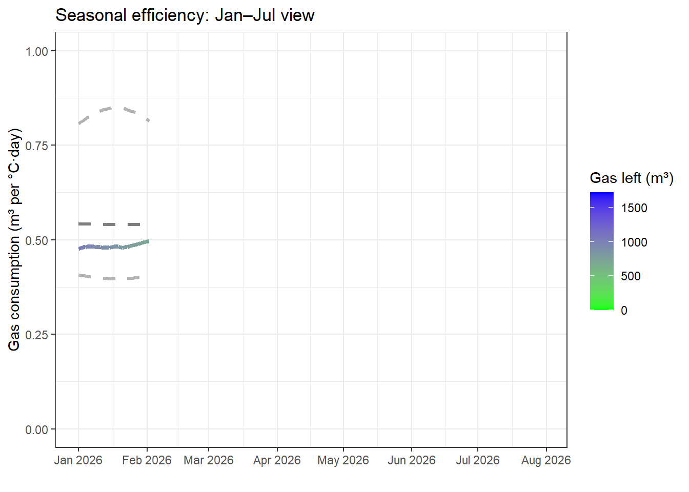

Heating needs
Introduction
In this document I’m describing a possible method for estimating the expected amount of energy required for heating left for a given year (or season as my billing cycle starts annually on August 1st, during the local summer).
I was motivated by my local billing method which has a huge discount for natural gas but only up to a given amount. I can supplement my heating with air conditioning, but that is more expensive than the discounted gas (but not more expensive than the full-priced gas). The efficiency of the air conditioning is also impacted by the outside temperature, COP (amount of heating / amount of electricity used) being higher when the outside temperature is higher.
Bottom line is, I’d like to use a given amount of natural gas for heating per year, and to top off the remaining heat requirements with air conditioning, preferably during autumn & spring.
For better or worse I feel that a considerable amount of my professional pride rests in tracking & determining the optimal method of heating.
Description of the data
Meteorological data from 1995 onward is available for free at meteostat for my location in Budapest, Hungary (Europe) in excel. I haven’t figured out the API, and I am downloading a new excel periodically and concatenating them in R.
I have also read my gas meter regularly from 2018 onwards. To make it interesting, I don’t read the meter regularly, so the times between readings are between 2.4 hours and 188 days so the quality of the observations are not ideal.
Quantifying cold and long winters
The amount of energy required for heating is the function of the outside temperature.
Therefore to predict the energy needs left in a given (heating) season, we should make a prediction about the expected amount of energy required until the end of the season.
Thankfully things seem to be straightforward if we assume that the inside temperature of the building should be constant (it’s not but bear with me). Assume 20°C (68°F). Heat loss is linear to the difference in temperature between the inside and outside temperatures link.
Therefore when the outside temperature is 16°C we would need 4x the power to heat the building than if it would be 19°C. Also, this amount of energy needed for these two days is the same that we would need for heating for 3 days if it were \(20 - 5/3 = 18.33\) degrees outside. In other words for a given heating season, we would add up the “missing degrees” until 20 for every day the outside temperature was less than 20°.

I personally like this approach very much, but of course we are neglecting:
- The effects of solar radiation, eg. sunlight heats up the building a bit,
- the building’s heat capacity, eg. after a hot summer’s day, it takes about 3 days for the walls to cool
For simplicity and to retain my sanity, lets also assume that at each timepoint (day), the distribution of ‘energy needs’ is normal.
I’d like to fit a linear model for the energy needs with a natural spline term containing the elapsed days. To capture the apparent heteroscedasticity, I’d opt for a generalized least squares model with an exponential variance structure (meaning that the residuals are understood to have a larger variance when more days have elapsed).

As a “petty craftsman” kind of approach, I calculated standard deviations for all days and then fitted a linear model over it with a natural spline term capturing the evolution of standard deviation in heating needs over the course of a season.

Now we have a mean and a variance for the cumulative heating energy needs on any given day (at my location)! I can then assign a z-score for each result through the years.

Estimating total energy needs left on a given day
This is all well and good, and this translates to an estimated total energy need at the beginning of a season, but we are mainly interested in the conditional energy need for the total season if we have observed the cumulative energy need up to day “d”.
I start with investigating how do energy need values observed on a given day correlate to the total energy need for a given season. Specifically, what was the correlation between the z-scores of a given day vs. the last day in a season.

The spike around day 150 is due to leap years (probably); didn’t bother to fix it, as it didn’t bother the results much.
Figuring in actual energy usage
The key insight is that a linear budget makes no sense — winter months consume vastly more gas than summer. Instead we track the ratio of gas consumed to cumulative heating need (m³ per °C·day). If this ratio stays stable, we can predict total annual gas usage by combining it with the conditional total heat need forecast.

Seasonal efficiency tracking
Rather than a flat daily budget, we track the gas consumption efficiency — how many m³ of gas per °C·day of heating need. This ratio should stay roughly stable over a season. If it climbs, we are over-heating; if it drops, we are under-heating (or the heat pump is picking up slack).
The dashed grey lines show the predicted efficiency band for the remaining season, based on conditional forecasts of total heat need.

The solid colored line shows actual gas usage efficiency (m³ per °C·day of heat need), colored by remaining gas budget. When the line stays within the grey dashed prediction bands, the budget is on track. If the line moves above the upper band, gas consumption is too aggressive relative to expected remaining heat need.
Remarks
Other information regarding the document’s compilation
Analyses were conducted using the R Statistical language (version 4.5.2; R Core Team, 2025) on Windows 11 x64 (build 26200), using the packages iterators (version 1.0.14; Analytics R, Weston S, 2022), lme4 (version 1.1.38; Bates D et al., 2015), Matrix (version 1.7.4; Bates D et al., 2025), boot (version 1.3.32; Canty A, Ripley B, 2025), doParallel (version 1.0.17; Corporation M, Weston S, 2022), lubridate (version 1.9.5; Grolemund G, Wickham H, 2011), forecast (version 9.0.1; Hyndman R et al., 2026), ggpubr (version 0.6.2; Kassambara A, 2025), SparseM (version 1.84.2; Koenker R, 2024), quantreg (version 6.1; Koenker R, 2025), foreach (version 1.5.2; Microsoft, Weston S, 2022), here (version 1.0.2; Müller K, 2025), nlme (version 3.1.168; Pinheiro J et al., 2025), splines2 (version 0.5.4; Wang W, Yan J, 2025), ggplot2 (version 4.0.2; Wickham H, 2016), readxl (version 1.4.5; Wickham H, Bryan J, 2025), dplyr (version 1.2.0; Wickham H et al., 2026) and readr (version 2.1.6; Wickham H et al., 2025).
References
- Analytics R, Weston S (2022). iterators: Provides Iterator Construct. doi:10.32614/CRAN.package.iterators https://doi.org/10.32614/CRAN.package.iterators, R package version 1.0.14, https://CRAN.R-project.org/package=iterators.
- Bates D, Mächler M, Bolker B, Walker S (2015). “Fitting Linear Mixed-Effects Models Using lme4.” Journal of Statistical Software, 67(1), 1-48. doi:10.18637/jss.v067.i01 https://doi.org/10.18637/jss.v067.i01.
- Bates D, Maechler M, Jagan M (2025). Matrix: Sparse and Dense Matrix Classes and Methods. doi:10.32614/CRAN.package.Matrix https://doi.org/10.32614/CRAN.package.Matrix, R package version 1.7-4, https://CRAN.R-project.org/package=Matrix.
- Canty A, Ripley B (2025). boot: Bootstrap Functions. doi:10.32614/CRAN.package.boot https://doi.org/10.32614/CRAN.package.boot, R package version 1.3-32, https://CRAN.R-project.org/package=boot. Davison A, Hinkley D (1997). Bootstrap Methods and Their Applications. Cambridge University Press, Cambridge. ISBN 0-521-57391-2, doi:10.1017/CBO9780511802843 https://doi.org/10.1017/CBO9780511802843.
- Corporation M, Weston S (2022). doParallel: Foreach Parallel Adaptor for the ‘parallel’ Package. doi:10.32614/CRAN.package.doParallel https://doi.org/10.32614/CRAN.package.doParallel, R package version 1.0.17, https://CRAN.R-project.org/package=doParallel.
- Grolemund G, Wickham H (2011). “Dates and Times Made Easy with lubridate.” Journal of Statistical Software, 40(3), 1-25. https://www.jstatsoft.org/v40/i03/.
- Hyndman R, Athanasopoulos G, Bergmeir C, Caceres G, Chhay L, O’Hara-Wild M, Petropoulos F, Razbash S, Wang E, Yasmeen F (2026). forecast: Forecasting functions for time series and linear models. doi:10.32614/CRAN.package.forecast https://doi.org/10.32614/CRAN.package.forecast, R package version 9.0.1, https://pkg.robjhyndman.com/forecast/. Hyndman RJ, Khandakar Y (2008). “Automatic time series forecasting: the forecast package for R.” Journal of Statistical Software, 27(3), 1-22. doi:10.18637/jss.v027.i03 https://doi.org/10.18637/jss.v027.i03.
- Kassambara A (2025). ggpubr: ‘ggplot2’ Based Publication Ready Plots. doi:10.32614/CRAN.package.ggpubr https://doi.org/10.32614/CRAN.package.ggpubr, R package version 0.6.2, https://CRAN.R-project.org/package=ggpubr.
- Koenker R (2024). SparseM: Sparse Linear Algebra. doi:10.32614/CRAN.package.SparseM https://doi.org/10.32614/CRAN.package.SparseM, R package version 1.84-2, https://CRAN.R-project.org/package=SparseM.
- Koenker R (2025). quantreg: Quantile Regression. doi:10.32614/CRAN.package.quantreg https://doi.org/10.32614/CRAN.package.quantreg, R package version 6.1, https://CRAN.R-project.org/package=quantreg.
- Microsoft, Weston S (2022). foreach: Provides Foreach Looping Construct. doi:10.32614/CRAN.package.foreach https://doi.org/10.32614/CRAN.package.foreach, R package version 1.5.2, https://CRAN.R-project.org/package=foreach.
- Müller K (2025). here: A Simpler Way to Find Your Files. doi:10.32614/CRAN.package.here https://doi.org/10.32614/CRAN.package.here, R package version 1.0.2, https://CRAN.R-project.org/package=here.
- Pinheiro J, Bates D, R Core Team (2025). nlme: Linear and Nonlinear Mixed Effects Models. doi:10.32614/CRAN.package.nlme https://doi.org/10.32614/CRAN.package.nlme, R package version 3.1-168, https://CRAN.R-project.org/package=nlme. Pinheiro JC, Bates DM (2000). Mixed-Effects Models in S and S-PLUS. Springer, New York. doi:10.1007/b98882 https://doi.org/10.1007/b98882.
- R Core Team (2025). R: A Language and Environment for Statistical Computing. R Foundation for Statistical Computing, Vienna, Austria. https://www.R-project.org/.
- Wang W, Yan J (2025). splines2: Regression Spline Functions and Classes. R package version 0.5.4, https://CRAN.R-project.org/package=splines2. Wang W, Yan J (2021). “Shape-Restricted Regression Splines with R Package splines2.” Journal of Data Science, 19(3), 498-517. doi:10.6339/21-JDS1020 https://doi.org/10.6339/21-JDS1020.
- Wickham H (2016). ggplot2: Elegant Graphics for Data Analysis. Springer-Verlag New York. ISBN 978-3-319-24277-4, https://ggplot2.tidyverse.org.
- Wickham H, Bryan J (2025). readxl: Read Excel Files. doi:10.32614/CRAN.package.readxl https://doi.org/10.32614/CRAN.package.readxl, R package version 1.4.5, https://CRAN.R-project.org/package=readxl.
- Wickham H, François R, Henry L, Müller K, Vaughan D (2026). dplyr: A Grammar of Data Manipulation. doi:10.32614/CRAN.package.dplyr https://doi.org/10.32614/CRAN.package.dplyr, R package version 1.2.0, https://CRAN.R-project.org/package=dplyr.
- Wickham H, Hester J, Bryan J (2025). readr: Read Rectangular Text Data. doi:10.32614/CRAN.package.readr https://doi.org/10.32614/CRAN.package.readr, R package version 2.1.6, https://CRAN.R-project.org/package=readr.
Time of compilation
2026-03-26 05:59:28.567428